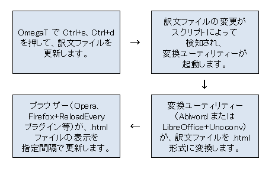

最近の CAT ツールは、最終的なレイアウトや書式を表示するのではなく、分節単位でテキストを表示します。これには多くの利点がありますが、翻訳をしながら最終的なレイアウトや書式を見ることができれば、翻訳者にとってたいへん有用です。したがって、多くの CAT ツールは、最終文書を作成して別のプログラム（通常はワープロ）で開いたりしなくてもレイアウトや書式を見ることができるプレビュー機能を備えています。OmegaT は内部にプレビュー機能を持っていませんが、別のプログラムを併用することでほぼ同じ機能を提供することができます。この技術情報では、プレビュー機能を設定するための一般原則を説明します。
理想として、プレビューは2つの機能を果たします。
.html ファイルを翻訳する場合、自動更新機能を備えたブラウザーを使用するのが、すぐにプレビュー機能を提供するための通常の解決方法です。自動更新機能を持つブラウザーの例。
タブをいちいち切り替えずに自由にインタネットを閲覧できるようにするために、常用のブラウザー以外のブラウザーをプレビュー機能のために使用したい場合があるかもしれません。 したがって、プレビュー機能のために別のブラウザーをインストールすることには利点があります。
適切なブラウザー（および/または必要なアドオン）を選択してインストールしたら、対象プロジェクトの target フォルダー内の訳文ファイルを開きます。
自動更新を有効にします。Firefox と Opera の場合はいずれも、開いた訳文 .html ファイル内を右クリックし、「指定間隔ごとに再読み込み」を指定（たとえば 5 秒）することによって有効になります。
このようにして、プレビュー機能が得られます。表示を更新するには、OmegaT のほうでプロジェクトを保存（Ctrl+s）し、訳文ファイルを生成（Ctrl+d）する必要があります。保存および訳文ファイルの生成に要する時間を別にすれば、指定した間隔以内で表示が更新されます。テキストの処理を進めてもブラウザーは自動スクロールしないので、手動でスクロールする必要があります。それでも、表示を更新したときには、更新前と同じ位置が表示されます。
原文ファイルが .html 形式の場合、訳文ファイルをブラウザーで開くのは簡単です。けれども、OmegaT では、 .docx 形式や .odt 形式のようなワープロ文書を取り扱うことのほうが多いでしょう。こうしたファイルのプレビューのために、上で述べたブラウザーを使う方法がやはり有効です。ただし、ファイルを .html 形式に変換するコンバータと、コンバータを自動起動させるユーティリティーも必要になります。それによって、ファイルを手動で変換する手間が省けます。
ここでは、コンバータとして使用できる 2 つのプログラム（Abiword と LibreOffice）を紹介します。
Abiword はワープロ、LibreOffice はオフィススイートです。いずれもフリーであり、さまざまなプラットフォームで利用でき、.docx および .odt ファイルを .html 形式に変換できます。
Abiword は比較的容量が小さく、非常に軽快に動作します。.docx および .odt ファイルを .html 形式に変換するためのコマンドライン機能を備えています。Abiword は、Linux にインストールするのは非常に簡単です。Windows にも比較的簡単にインストールできます。Abiword はここからダウンロードできます。
LibreOffice は、Microsoft Office に類する十分な機能を持つオフィススイートです。.docx および .odt ファイルを .html 形式に変換するためにも使えますが、それをコマンドラインから実行するには、プラグイン Unoconv も必要です。LibreOffice はここからダウンロードできます。プラグイン Unoconv はここからダウンロードできます。
Abiword または LibreOffice+Uniconv の組み合わせをインストールしたら、OmegaT が生成した訳文ファイルを、ブラウザーで読めるように html 形式に変換できます。まず OmegaT で保存し、訳文ファイルを生成する必要があります。次に変換ユーティリティーを起動し、ブラウザーの表示が更新されるのを待ちます。
これを実現する方法はいろいろありますが、1 つの実際的な解決策は、OmegaT が生成した訳文ファイルの変更を検知するスクリプトを使用することです。スクリプトは、変更を検知したら、ファイルをブラウザーで読めるように html 形式に変換するユーティリティーを自動起動させます。手順をまとめると次のようになります。

この機能を果たすスクリプトの例を、技術情報：Priorviewで説明しています。
Copyright Marc Prior 2012